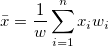
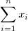
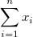

ist die
ist die  -te Stichprobe.
-te Stichprobe.Siehe Details zu den Optionen der Neuberechnung unter Analyseergebnisse neuberechnen.
Legen Sie das Eingabearbeitsblatt fest. Siehe hier die Details dazu, wie Sie den Eingabedatenbereich festlegen.
Legen Sie für jede Spalte die jeweils zu berechnenden Eigenschaften fest. ist die -te Stichprobe.
| N gesamt |
Gesamtanzahl der Datenpunkte, bezeichnet mit n |
|---|---|
| Mittelwert |
Der (durchschnittliche) Mittelwert . Wenn es keine Variable Gewichtung gibt, wird die Formel reduziert auf |
| Standardabweichung |
wobei |
| Summe |  . Wenn es keine Variable Gewichtung gibt, wird die Formel reduziert auf . . Wenn es keine Variable Gewichtung gibt, wird die Formel reduziert auf . |
| Minimum |
|
| Median |
Median oder zweites (50%) Quantil, Q2 Informationen zu Berechnungsmethoden finden Sie unter Interpolation von Quantilen. |
| Maximum |
|
Die Perzentilliste zeigt die Perzentilwerte festgelegt mit "90 95 99" an.
Mehrere Identifizierer können in die Ausgabetabelle mit der Zusammenfassung eingefügt werden, um die Informationen der Quelldatensätze zu zeigen. Sie können Identifizierer über Schaltflächen hinzufügen, entfernen und ordnen: Nach oben verschieben  , Nach unten verschieben
, Nach unten verschieben  , Entfernen
, Entfernen  , Alle auswählen
, Alle auswählen  , Auswählen
, Auswählen  . Sie befinden sich auf der Symbolleiste
. Sie befinden sich auf der Symbolleiste  .
.
Jeder Identifizierertyp wird als eine Spalte in das Zusammenfassungsblatt eingefügt. Optionen sind:
| Bereich | Die Bereichssyntax wird verwendet. |
|---|---|
| Mappenname | Der Langname der Arbeitsmappe wird verwendet. |
| Blattname | Der Arbeitsblattname wird verwendet. |
| Name | Verwenden Sie den Langnamen der entsprechenden Spalte, wenn es einen Langnamen gibt. Ansonsten verwenden Sie den Kurznamen der Spalte. |
| Kurzname | Verwenden Sie den Kurznamen der entsprechenden Spalte. |
| Langname | Verwenden Sie den Langnamen der entsprechenden Spalte. |
Legen Sie fest, wo das Berichtsblatt ausgegeben wird.
 .
.^2/d}")

}\,")
}\,")